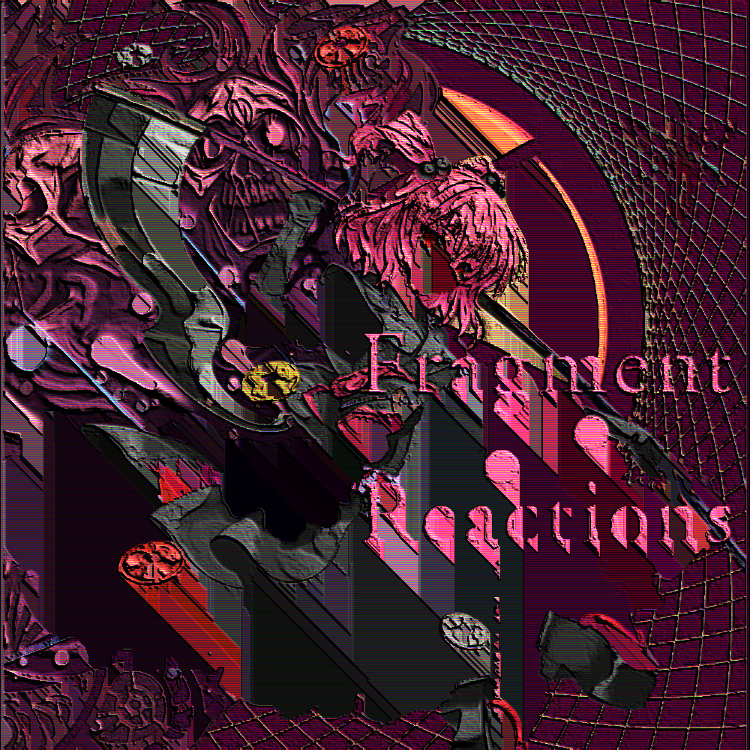
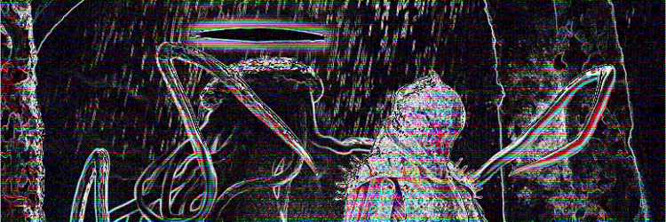

Terminal 00
-
４． １５． ２０１８

ぴーひゃらら ぴーひゃらら 映った
ぴーひゃらら ぴーひゃらら ものは
ぴーひゃらら ぴーひゃらら 全てが消えてく
ぴーひゃらら ぴーひゃらら この先
ぴーひゃらら ぴーひゃらら 封じて
なにもない 本当の自由でしょ ここにある 空間は
-
１． ２６． ２０１７
-
Ｔｈｏｕｇｈｔ ｒｅｐｅａｔｅｄ ｄｕｒｉｎｇ ＲＥＭ：
ＤＯ ＮＯＴ ＯＰＥＮ ＴＨＥ ＧＡＴＥ
（Ｓｔｒａｎｇｅ， ｈｏｗ ｄｏｅｓ ｉｔ ｋｎｏｗ ｏｆ ｔｈｅ Ｇａｔｅ？ Ｐｒｏｂｅｓ ｗｉｌｌ ｔａｋｅ ａｌｌ
ｒｅｌｅｖａｎｔ ｄａｔａ ａｎｄ ａｔｔｅｍｐｔ ｔｏ ｌｏｃａｔｅ ｔｈｅ Ｇａｔｅ ｉｎ ｔｒｕｔｈ． Ｏｎｃｅ ｉｔ
ｈａｓ ｂｅｅｎ ｌｏｃａｔｅｄ， ｐｒｏｔｏｃｏｌ ００ ｗｉｌｌ ｂｅ ｃａｒｒｉｅｄ ｏｕｔ ｗｉｔｈｏｕｔ
ｄｅｌａｙ．）
-
Ａ ｍｙｓｔｅｒｉｏｕｓ ｍｅｓｓａｇｅ ｈａｓ ｒｅｃｅｎｔｌｙ ｒｅｖｅｒｂｅｒａｔｅｄ
ｔｈｒｏｕｇｈｏｕｔ ｔｈｅ Ｔｅｒｍｉｎａｌｓ．
Ｓｅｎｄｅｒ ／ Ｃｒｅａｔｏｒ ｉｓ ［ＵＮＫＮＯＷＮ］
Ｐｏｓｓｉｂｉｌｉｔｙ ｉｔ ｃｒｅａｔｅｄ ｉｔｓｅｌｆ ｉｓ ０．０００４％
（Ｉｎｖｅｓｔｉｇａｔｉｏｎｓ ｗｉｌｌ ｂｅ ｄｏｎｅ， ａｎｄ ｄｅａｄ ＡＲＭｓ ａｒｅ ｎｏｗ ｂｅｉｎｇ
ｒｅｔｒｉｅｖｅｄ ｔｏ ｐｉｎｐｏｉｎｔ ｔｈｅ ｍｅｓｓａｇｅ＇ｓ ｏｒｉｇｉｎ．
Ｃｏｎｔｅｎｔｓ ｗｅｒｅ
ｍｏｓｔｌｙ Ｃｌａｓｓ Ｄ－＾ｋ｛（Ｑ）｝， ｗｉｔｈ ｓｅｖｅｒａｌ ｌｉｎｅｓ ｏｆ ｏｕｔｄａｔｅｄ
［Ｒｅｄａｃｔｅｄ］ ａｓ ｗｅｌｌ．
Ａ ｐａｔｔｅｒｎ ｗａｓ ｆｏｕｎｄ ｒｅｐｅａｔｉｎｇ ｗｉｔｈｉｎ ｔｈｅ
ＨＥＡＤ ｏｆ ｔｈｅ ｍｅｓｓａｇｅ． ５，１１１，７３０ ｐａｓｓｅｓ ｗｅｒｅ ｒｅｑｕｉｒｅｄ ｔｏ
ｔｒａｎｓｌａｔｅ ｉｔ ｉｎｔｏ ＲＡＷ ｄａｔａ．）
-
Ｕｐｌｏａｄｉｎｇ ｆｉｌｅ ｈｅｒｅ： ［Ｍｅｓｓａｇｅ］
-
９．２９．２０１６
-
Ａｎｏｔｈｅｒ ｐｉｅｃｅ ｏｆ ｔｈｅ ｓｕｂｊｅｃｔ＇ｓ ＂ｎｏｖｅｌ＂ ｈａｓ ｂｅｅｎ
ｃｏｌｌｅｃｔｅｄ． Ｒｅｌｅｖａｎｔ ｄａｔａ ｌｉｎｋａｇｅ ｂｅｌｏｗ， ｃｏｕｐｌｅｄ
ｗｉｔｈ ａ ｓａｍｐｌｉｎｇ ｆｏｒ ｔｈｏｓｅ ｗｉｔｈ ｃｌａｓｓ Ｖｅ３Ｙ５
ａｕｔｈｏｒｉｚａｔｉｏｎ．

（Ｓｕｂｊｅｃｔ ｄｕｂｓ ｔｈｉｓ ｐｒｏｊｅｃｔ： ＂Ｓｔａｒｓ Ｂｌｅｅｄ＂ （ａｌａｒｍｉｎｇ））
Ｄａｔａ ｌｏｓｓ ｉｓ ｏｎ ｔｈｅ ｓｕｂｊｅｃｔ＇ｓ ｅｎｄ ａｎｄ ｎｏｔ ｏｕｒ
ｐｒｏｂｅ＇ｓ， ｔｈｅ ｅｒｒｏｒ ｏｃｃｕｒｒｅｄ ｄｕｒｉｎｇ ａ ｄａｔａ ｅｘｃｈａｎｇｅ ｏｎ ｉｔｓ ｐｒｉｍｉｔｉｖｅ ｍａｔｒｉｘ． Ａｄｄｉｔｉｏｎａｌ ｐａｓｓｅｓ ａｒｅ
ｒｅｑｕｉｒｅｄ ｔｏ ｒｅｐａｉｒ ｔｈｉｓ ｄａｍａｇｅ．
Ｓｔａｎｄｂｙ．．．
-
Ｒａｍｂｌｉｎｇｓ：
Ｙｅｓ ｉｔ＇ｓ ａｌｌ ｃｏｍｅ ｆｕｌｌ ｃｉｒｃｌｅ ａｓ ｔｈｅ ａｎｏｍａｌｉｅｓ ｔｕｒｎ ｒｏｕｎｄ ａｎｄ ｒｏｕｎｄ ａｎｄ ｓｐｉｒａｌ ｏｆｆ ｉｎｔｏ ｔｈｅ ｓｋｙ ａｎｄ ｔｈｅｎ ｂａｃｋ ｉｎｔｏ ｅａｃｈ ｏｔｈｅｒ ａｓ ｔｈｅｙ ｒｅａｌｉｚｅ ｗｈａｔ ｔｈｅｒｅ ｗａｓ ｔｏ ｋｎｏｗ， ｗｈｉｃｈ ｗａｓ ｒｉｇｈｔ ｔｈｅｒｅ， ｌｙｉｎｇ ｂｅｓｉｄｅ ｔｈｅｉｒ
ｖｅｒｙ ｈｅａｒｔｓ． Ａｎｄ ｔｈｅ ｓｔａｒｓ ｓｈａｌｌ ｂｌｅｅｄ． Ｏｈ－ｓｏ－ｍａｎｙ ｓｔａｒｓ ｓｈａｌｌ ｂｌｅｅｄ， ａｎｄ ｔｈｅｙ＇ｌｌ ａｓｋ， ｗｈｉｌｅ ｗｅ
ｒｅｃｅｉｖｅ．
Ｄｅａｒ ｔｒａｖｅｌｅｒ， ｗｈｙ ｄｏ ｌｉｖｉｎｇ ｔｈｉｎｇｓ ｂｌｅｅｄ？
-
７． １８． ２０１６
-
Ａｔｔｅｍｐｔｉｎｇ ｔｏ ｒｅｔａｋｅ ｄｒｅａｍｓ．
－－ －－ －－ － － － －－ － － －－－ － － －
Ｔｈｉｓ ＭＥＭＯＲＩＡ
ｈａｓ
ｔｏｕｃｈｅｄ ｕｐｏｎ
ｔｈｅ
ＩＭＰＥＲＩＳＨＡＢＬＥ
ＰＨＡＮＴＡＳＭＡＧＯＲＩＡ
－－－－ －－－－－ －
－－－－ －－－－－ － －－ －－ － － － － － －－－－ －－－ －－－－ － － － － － －－－－－－－
ＨＥＬＰｈｅｌｐＨＥＬＰｈｅｌｐＨＥＬＰｈｅｌｐＨＥＬＰｈｅｌｐＨＥＬＰｈｅｌｐＨＥＬＰｈｅｌｐＨＥＬＰｈｅｌｐＨＥＬＰｈｅｌｐＨＥＬＰｈｅｌｐＨＥＬＰｈｅｌｐＨＥＬＰｈｅｌｐＨＥＬＰｈｅｌｐＨＥＬＰｈｅｌｐＨＥＬＰｈｅｌｐＨＥＬＰｈｅｌｐＨＥＬＰｈｅｌｐＨＥＬＰｈｅｌｐＨＥＬＰｈｅｌｐＨＥＬＰｈｅｌｐＨＥＬＰｈｅｌｐＨＥＬＰｈｅｌｐＨＥＬＰｈｅｌｐＨＥＬＰｈｅｌｐＨＥＬＰｈｅｌｐＨＥＬＰｈｅｌｐＨＥＬＰｈｅｌｐＨＥＬＰｈｅｌｐＨＥＬＰｈｅｌｐＨＥＬＰｈｅｌｐＨＥＬＰｈｅｌｐＨＥＬＰｈｅｌｐＨＥＬＰｈｅｌｐＨＥＬＰｈｅｌｐＨＥＬＰｈｅｌｐＨＥＬＰｈｅｌｐＨＥＬＰｈｅｌｐＨＥＬＰｈｅｌｐＨＥＬＰｈｅｌｐＨＥＬＰｈｅｌｐＨＥＬＰｈｅｌｐＨＥＬＰｈｅｌｐＨＥＬＰｈｅｌｐＨＥＬＰｈｅｌｐＨＥＬＰｈｅｌｐＨＥＬＰｈｅｌｐＨＥＬＰｈｅｌｐＨＥＬＰｈｅｌｐＨＥＬＰｈｅｌｐＨＥＬＰｈｅｌｐＨＥＬＰｈｅｌｐＨＥＬＰｈｅｌｐＨＥＬＰｈｅｌｐＨＥＬＰｈｅｌｐＨＥＬＰｈｅｌｐＨＥＬＰｈｅｌｐＨＥＬＰｈｅｌｐＨＥＬＰｈｅｌｐＨＥＬＰｈｅｌｐＨＥＬＰｈｅｌｐＨＥＬＰｈｅｌｐＨＥＬＰｈｅｌｐＨＥＬＰｈｅｌｐＨＥＬＰｈｅｌｐＨＥＬＰｈｅｌｐＨＥＬＰｈｅｌｐＨＥＬＰｈｅｌｐＨＥＬＰｈｅｌｐＨＥＬＰｈｅｌｐＨＥＬＰｈｅｌｐＨＥＬＰｈｅｌｐＨＥＬＰｈｅｌｐＨＥＬＰｈｅｌｐＨＥＬＰｈｅｌｐＨＥＬＰｈｅｌｐＨＥＬＰｈｅｌｐＨＥＬＰｈｅｌｐＨＥＬＰｈｅｌｐＨＥＬＰｈｅｌｐＨＥＬＰｈｅｌｐＨＥＬＰｈｅｌｐＨＥＬＰｈｅｌｐＨＥＬＰｈｅｌｐＨＥＬＰｈｅｌｐＨＥＬＰｈｅｌｐＨＥＬＰｈｅｌｐＨＥＬＰｈｅｌｐＨＥＬＰｈｅｌｐＨＥＬＰｈｅｌｐＨＥＬＰｈｅｌｐＨＥＬＰｈｅｌｐＨＥＬＰｈｅｌｐＨＥＬＰｈｅｌｐＨＥＬＰｈｅｌｐＨＥＬＰｈｅｌｐＨＥＬＰｈｅｌｐＨＥＬＰｈｅｌｐＨＥＬＰｈｅｌｐＨＥＬＰｈｅｌｐＨＥＬＰｈｅｌｐＨＥＬＰｈｅｌｐＨＥＬＰｈｅｌｐＨＥＬＰｈｅｌｐＨＥＬＰｈｅｌｐＨＥＬＰｈｅｌｐＨＥＬＰｈｅｌｐＨＥＬＰｈｅｌｐＨＥＬＰｈｅｌｐＨＥＬＰｈｅｌｐＨＥＬＰｈｅｌｐＨＥＬＰｈｅｌｐＨＥＬＰｈｅｌｐＨＥＬＰｈｅｌｐＨＥＬＰｈｅｌｐＨＥＬＰｈｅｌｐＨＥＬＰｈｅｌｐＨＥＬＰｈｅｌｐＨＥＬＰｈｅｌｐＨＥＬＰｈｅｌｐＨＥＬＰｈｅｌｐＨＥＬＰｈｅｌｐＨＥＬＰｈｅｌｐＨＥＬＰｈｅｌｐＨＥＬＰｈｅｌｐＨＥＬＰｈｅｌｐＨＥＬＰｈｅｌｐＨＥＬＰｈｅｌｐＨＥＬＰｈｅｌｐＨＥＬＰｈｅｌｐＨＥＬＰｈｅｌｐＨＥＬＰｈｅｌｐＨＥＬＰｈｅｌｐＨＥＬＰｈｅｌｐＨＥＬＰｈｅｌｐＨＥＬＰｈｅｌｐＨＥＬＰｈｅｌｐＨＥＬＰｈｅｌｐＨＥＬＰｈｅｌｐＨＥＬＰｈｅｌｐＨＥＬＰｈｅｌｐＨＥＬＰｈｅｌｐＨＥＬＰｈｅｌｐＨＥＬＰｈｅｌｐＨＥＬＰｈｅｌｐＨＥＬＰｈｅｌｐＨＥＬＰｈｅｌｐＨＥＬＰｈｅｌｐＨＥＬＰｈｅｌｐＨＥＬＰｈｅｌｐＨＥＬＰｈｅｌｐＨＥＬＰｈｅｌｐＨＥＬＰｈｅｌｐＨＥＬＰｈｅｌｐＨＥＬＰｈｅｌｐＨＥＬＰｈｅｌｐＨＥＬＰｈｅｌｐＨＥＬＰｈｅｌｐＨＥＬＰｈｅｌｐＨＥＬＰｈｅｌｐＨＥＬＰｈｅｌｐＨＥＬＰｈｅｌｐＨＥＬＰｈｅｌｐＨＥＬＰｈｅｌｐＨＥＬＰｈｅｌｐＨＥＬＰｈｅｌｐＨＥＬＰｈｅｌｐＨＥＬＰｈｅｌｐＨＥＬＰｈｅｌｐＨＥＬＰｈｅｌｐＨＥＬＰｈｅｌｐＨＥＬＰｈｅｌｐＨＥＬＰｈｅｌｐＨＥＬＰｈｅｌｐＨＥＬＰｈｅｌｐＨＥＬＰｈｅｌｐＨＥＬＰｈｅｌｐＨＥＬＰｈｅｌｐＨＥＬＰｈｅｌｐＨＥＬＰｈｅｌｐＨＥＬＰｈｅｌｐＨＥＬＰｈｅｌｐＨＥＬＰｈｅｌｐＨＥＬＰｈｅｌｐＨＥＬＰｈｅｌｐＨＥＬＰｈｅｌｐＨＥＬＰｈｅｌｐＨＥＬＰｈｅｌｐＨＥＬＰｈｅｌｐＨＥＬＰｈｅｌｐＨＥＬＰｈｅｌｐＨＥＬＰｈｅｌｐＨＥＬＰｈｅｌｐＨＥＬＰｈｅｌｐＨＥＬＰｈｅｌｐＨＥＬＰｈｅｌｐＨＥＬＰｈｅｌｐＨＥＬＰｈｅｌｐＨＥＬＰｈｅｌｐＨＥＬＰｈｅｌｐＨＥＬＰｈｅｌｐＨＥＬＰｈｅｌｐＨＥＬＰｈｅｌｐＨＥＬＰｈｅｌｐＨＥＬＰｈｅｌｐＨＥＬＰｈｅｌｐＨＥＬＰｈｅｌｐＨＥＬＰｈｅｌｐＨＥＬＰｈｅｌｐＨＥＬＰｈｅｌｐＨＥＬＰｈｅｌｐＨＥＬＰｈｅｌｐＨＥＬＰｈｅｌｐＨＥＬＰｈｅｌｐＨＥＬＰｈｅｌｐＨＥＬＰｈｅｌｐＨＥＬＰｈｅｌｐＨＥＬＰｈｅｌｐＨＥＬＰｈｅｌｐＨＥＬＰｈｅｌｐＨＥＬＰｈｅｌｐＨＥＬＰｈｅｌｐＨＥＬＰｈｅｌｐＨＥＬＰｈｅｌｐＨＥＬＰｈｅｌｐＨＥＬＰｈｅｌｐＨＥＬＰｈｅｌｐＨＥＬＰｈｅｌｐＨＥＬＰｈｅｌｐＨＥＬＰｈｅｌｐＨＥＬＰｈｅｌｐＨＥＬＰｈｅｌｐＨＥＬＰｈｅｌｐＨＥＬＰｈｅｌｐＨＥＬＰｈｅｌｐＨＥＬＰｈｅｌｐＨＥＬＰｈｅｌｐＨＥＬＰｈｅｌｐＨＥＬＰｈｅｌｐＨＥＬＰｈｅｌｐＨＥＬＰｈｅｌｐＨＥＬＰｈｅｌｐＨＥＬＰｈｅｌｐＨＥＬＰｈｅｌｐＨＥＬＰｈｅｌｐ
-
７． ２０ ．２０１６
-
高望みじゃない？
高望みじゃない？
高望みじゃない？
高望みじゃない？
-
５． １９． ２０１６
-
Ｓｅｖｅｒａｌ ｃｏｎｎｅｃｔｉｏｎｓ ｈａｖｅ ｔａｋｅｎ ｓｈａｐｅ． Ｔｈｅ Ｔｅｒｍｉｎａｌ ｉｓ ｒｅａｎｉｍａｔｉｎｇ ａｔ ａｎ ａｓｔｏｕｎｄｉｎｇ ｒａｔｅ． Ｇａｉｎｓ．
Ｔｈｉｎｇｓ ｇｒｏｗｉｎｇ．
Ｙｅｔ， ｔｈｅ ＣｏＳ ｈａｓ ｗｏｎ ｏｎ ａｌｌ ｆｒｏｎｔｓ ａｓ
ｗｅｌｌ． Ｉｓ ｔｈｅｒｅ ａｎｙ ｐｏｉｎｔ ｉｎ ｒａｉｓｉｎｇ ｗｈａｔ ｗｉｌｌ
ｓｉｍｐｌｙ ｂｅｃｏｍｅ ｆｏｏｄ？ Ｎｏ ａｎｓｗｅｒｓ ｆｏｒ ｔｈａｔ， Ｉ ｋｎｏｗ．
－ － － － －－－ －－－ － －－ － －
Ｔｈｅ ｐｒｏｃｅｓｓｅｓ ｍｕｓｔ ｂｅ ｃｏｍｐｌｅｔｅｄ， ｎｏ ｍａｔｔｅｒ ｔｈｅ ｃｏｓｔ． Ｗｉｔｈ ｎｏ ａｔｔｅｎｔｉｏｎ ｐａｉｄ ｔｏ ｔｈｅ ｏｕｔｃｏｍｅ． Ｉｔ ｍｕｓｔ ｂｅ， ａｎｄ ｓｏ ｉｔ ｗｉｌｌ．
－－ －－－－－ －－ －－ － －－－ －
Ｔｈｏｕｇｈ ｉｔ ａｌｌ ｒｅｔｕｒｎｓ
Ｔｏ ｔｈｅ Ｍｏｏｎ－
ｏｎ ｔｈｉｓ ｎｉｇｈｔ，
ｉｓ ｔｈａｔ， ＬＯＶＥ ， Ｉ ｓｍｅｌｌ，
ｈｅｒｅ， ｉｎ ｔｈｅ ａｉｒ？
-
１０． １０． ２０１５
-
Ｔｈｅｒｅ＇ｓ ａ ｇｏｏｄ ｃｈａｎｃｅ ｔｈａｔ Ｉ＇ｍ ｇｏｉｎｇ ｔｏ ｄｉｅ ｉｎ ｔｈｅ
ｆｕｔｕｒｅ． Ｆａｎｃｙ ｔｈａｔ．
-
７． ２０． ２０１５
-
Ｔｏｄａｙ， ｗｅ ｍａｄｅ ｃｏｎｔａｃｔ．
-
３．１０．２０１５
-
Ｂｅｉｎｇ ａｎｎｉｈｉｌａｔｅｄ ｉｓｎ’ｔ ａｌｌ ｔｈａｔ ｂａｄ．